This report describes the synthetic eye-tracking data produced by this project. It covers what
the data contains, how the two generators work, how participant-level variability is
parameterized, what empirical literature the parameter choices draw on, where the current
implementation falls short, and a first sim-to-real experiment testing whether synthetic data can
train an event detector that transfers to real recordings. Figures and statistics come from a
single seeded run of
scripts/make_report_figures.py (seed = 42); rerunning reproduces them exactly.
Run summary: 40 simulated participants, 5 stimuli, 6 trials per participant. Each stimulus is a reading grid of 96 AOIs (8 lines × 12 words). The run produced 67,279 rule-based events and 1,451,051 raw-gaze samples at 120 Hz.
Each generator emits three views of the same simulated behavior, sharing one schema so that rule-based and model-based output can be compared directly.
| View | Granularity | Key columns | Role |
|---|---|---|---|
| Event-level | one row per fixation / saccade / blink | event_type, start/end/duration_ms, x_px, y_px, aoi_id, saccade_amp_px, saccade_angle_deg, validity |
the interpretable primary representation |
| Raw gaze | one row per sample (120 Hz) | timestamp_ms, x_px, y_px, pupil_size, validity, event_index |
approximates a tracker's sample stream |
| AOI summary | one row per (participant × trial × AOI) | first_fixation_duration_ms, total_fixation_duration_ms, fixation_count, visit_count, time_to_first_fixation_ms, regression_count |
the reading-research feature set |
The generators build event-level data first and then expand it into a raw 120 Hz signal, rather than synthesizing the raw signal directly. Working at the event level keeps the generative assumptions explicit and lets the same events drive both the raw stream and the AOI summaries.
A stimulus represents a page of text as a grid of word-level Areas of Interest (AOIs), arranged left to right and top to bottom. Each AOI is assigned a difficulty value that scales fixation behavior on that word. Note that these AOIs are abstract cells, not real words; difficulty is drawn at random rather than derived from word length or frequency (see Section 6).
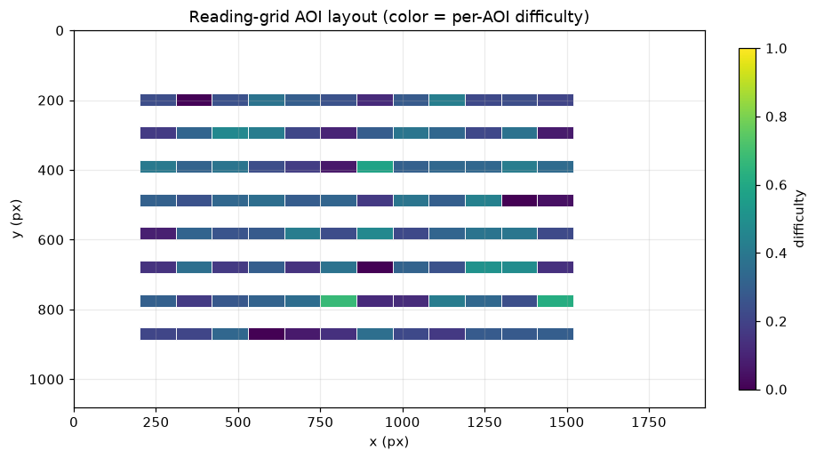
The expansion places fixation samples near the AOI centre with added noise, interpolates saccade
samples linearly between successive fixations, and marks blink and missing samples as NaN with
validity = 0 (red lines below).
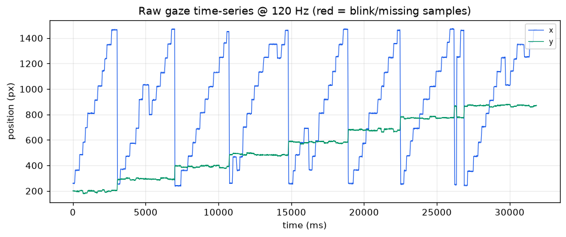
Fixation durations are right-skewed, with a mode near the typical reading fixation and a tail of
longer fixations on harder words, which is the shape commonly modelled as lognormal or gamma. In
this run the realized mean is about 323 ms (median 292 ms). That is higher than the 200–250 ms
usually reported for skilled silent reading. The gap is a direct consequence of how durations are
built: the configured 240 ms is the mean of the unscaled draw, which is then multiplied by a
difficulty-dependent factor (1 + 0.6·difficulty) and divided by the participant's reading-speed
factor. Both terms push the realized mean above the base. Recentring them would bring the mean into the empirical range; the
current values are kept because they make the difficulty and individual effects easy to see in
this demonstration. This is a calibration choice rather than a fit to human data (Section 6).
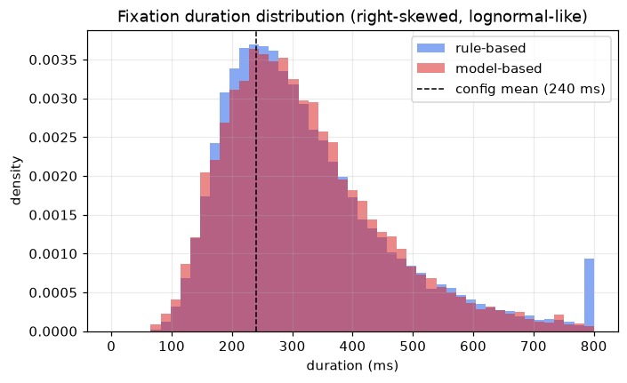
Saccade amplitude follows the geometry of the AOI grid. Most saccades are short forward steps to a nearby word; a tail of longer saccades comes from line-final return sweeps and regressions. The mean amplitude here is about 227 px. With roughly 110 px-wide word AOIs that is close to two word-widths, larger than a single forward step because the mean pools long return sweeps and regressions with the short forward saccades.
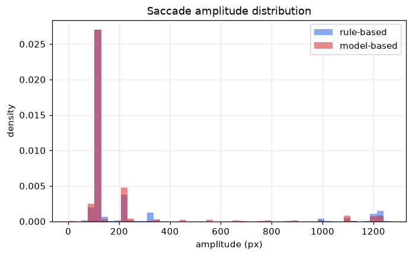
The AOI-to-AOI transition matrix concentrates probability just off the diagonal, reflecting word-by-word forward movement, with additional mass for return sweeps and regressions.
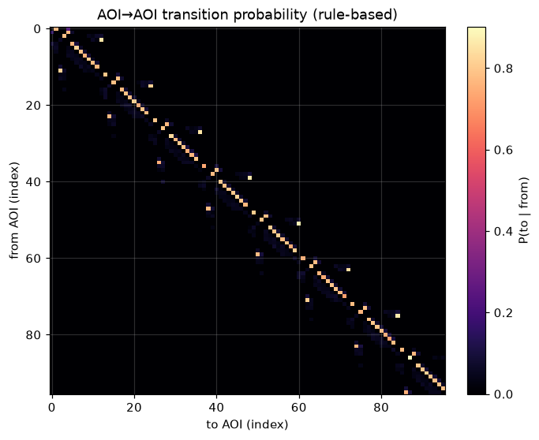
Both generators share an interface (generate_events → generate_raw_gaze →
generate_aoi_summary) and emit the same schema. Each step is a named, inspectable operation,
which keeps the generative assumptions easy to audit.
The rule-based generator synthesizes behavior from explicit assumptions and distributions and needs no training data.
regression_tendency and skip_tendency.(1 + 0.6·difficulty) and divided by the reading-speed factor.atan2(dy, dx).The model-based generator learns from reference data and then samples. The initial version uses interpretable statistical models and no deep learning.
next, skip,
regression_1, regression_2plus, line_break, end), estimated from the reference with
Laplace smoothing and a forward-reading prior, then sampled at generation time.[fixation_duration, saccade_amplitude] with a few hidden
reading modes (for example normal, careful, skimming, rereading). It is opt-in and skipped when
hmmlearn is absent, so it is not a hard dependency.The table below fits the model-based generator on the rule-based output and compares the two.
| Quantity | KS statistic | Note |
|---|---|---|
| Fixation duration | 0.018 | very close marginal (Wasserstein ≈ 5.1 ms) |
| Saccade amplitude | 0.159 | close, with minor shape differences |
| AOI transition matrix | Frobenius distance ≈ 1.51 | qualitatively similar; see caveat below |
These numbers should be read with care. The reference here is the rule-based generator's own output, so the comparison measures how faithfully the parametric and Markov models recover a known generating process, not how well either matches human reading. Close agreement on the marginals is partly expected for that reason, and we report it only as a sanity check on the fitting pipeline. External validation against a public human dataset is part of M3 and has not been done yet.
Two differences remain even in this internal comparison. The model produced 25,310 events against the rule-based 67,279, and scanpaths under the learned Markov chain terminate earlier than the near-complete grid sweeps of the rule-based source. The transition-matrix distance is a single aggregate that also depends on how the two AOI sets are aligned, so it is indicative rather than precise.
A goal of the generator is that simulated participants differ from one another in behaviorally distinct ways. Each participant is given a trait vector sampled from configurable population distributions.
| Trait | Meaning | Sampled range (this run) |
|---|---|---|
reading_speed_factor |
overall speed; scales fixation durations | 0.45 – 1.34 |
regression_tendency |
propensity to re-read earlier words | 0.03 – 0.24 |
fixation_noise_sd |
spatial imprecision of fixations (px) | 0.5 – 14.4 |
missing_rate |
blink / data-loss rate | 0.00 – 0.08 |
skip_tendency |
propensity to skip words | derived from skip_prob + noise |
pupil_baseline |
baseline pupil size | configurable |
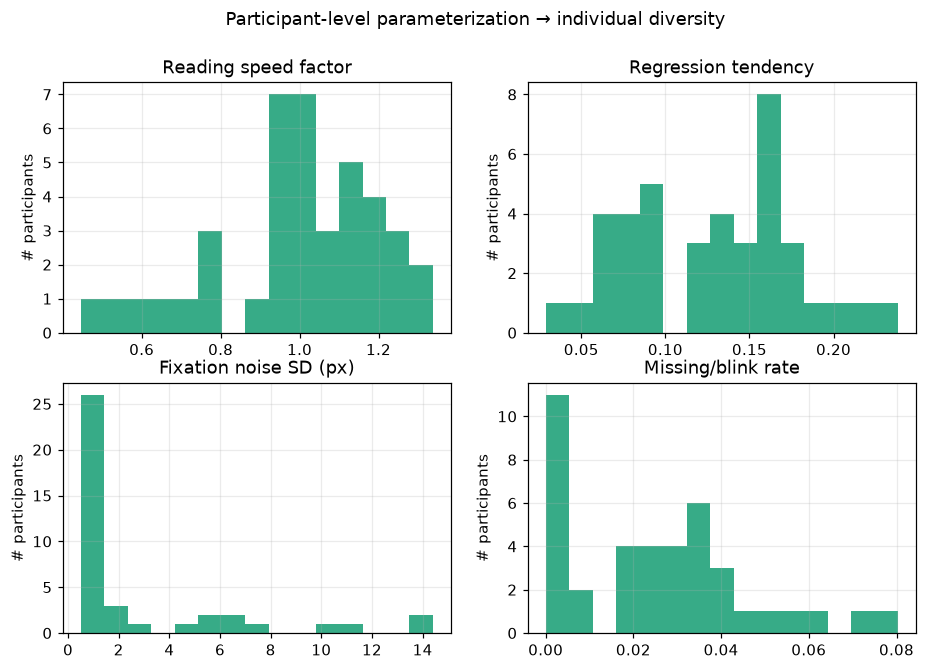
These parameters are not cosmetic: they map onto measurable differences in the output. Faster readers produce shorter fixations, and participants with a higher regression tendency produce more regressive saccades.
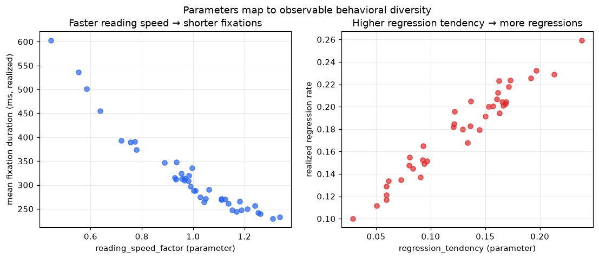
The realized regression rate in the right-hand panel is an angle-based proxy (the fraction of
saccades pointing leftward or upward, here taken as |angle| > 120°). It is a rough operational
measure rather than the linguistically defined regression rate, and the high-regression simulated
readers deliberately exceed the 10–15% typical of skilled reading to make the effect visible.
The same contrast appears in individual scanpaths. A fast, low-regression reader sweeps fairly cleanly from left to right, while a high-regression reader's path contains many backward jumps.
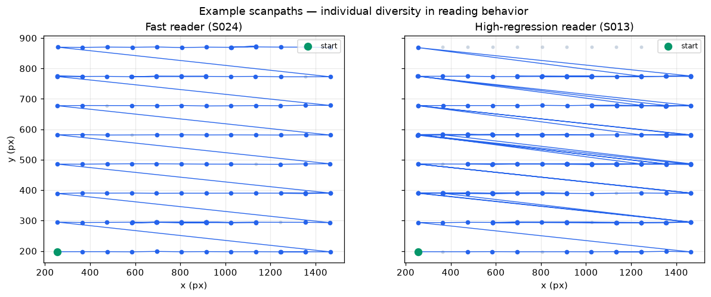
Variability also comes from the stimulus side: per-AOI difficulty lengthens fixations and raises regressions on harder words, so a given participant behaves differently across easier and harder text.
The parameter defaults draw on the classic reading eye-movement literature. The four main anchors (Rayner 1998 and 2009; the E-Z Reader model, Reichle et al. 1998; the SWIFT model, Engbert et al. 2005) were checked for venue and year. Where a default is a modelling convention rather than a single sourced number, the table says so.
| Generator parameter (default) | Literature value / finding | Source | Note |
|---|---|---|---|
| Fixation duration ~240 ms mean, right-skewed, ~80–800 ms | Mean fixation in silent reading ≈ 200–250 ms; positively skewed; long tail | Rayner (1998); Rayner (2009) | 240 ms is within the cited mean range. Lognormal/gamma captures the right skew (Holmqvist et al., 2011). The 80–800 ms clipping is a generous range, not a sourced number. |
| Saccade duration ~35 ms | Duration scales with amplitude; reading saccades ~20–40 ms (~30 ms typical) | Rayner (1998); Holmqvist et al. (2011) | 35 ms is a fixed proxy for an amplitude-dependent duration; a modelling choice (see Section 6). |
| Saccade amplitude ~7–9 char spaces (~2°) | Mean forward saccade ≈ 7–9 letter spaces in alphabetic reading | Rayner (1998); Rayner (2009) | Directly sourced. The char-space to degree conversion depends on font size and viewing distance, so ~2° is approximate. |
| Amplitude tied to inter-word distance | Landing near word centre (preferred viewing location); length governed by word boundaries | Rayner (1998); Reichle et al. (1998); Engbert et al. (2005) | Motivated by E-Z Reader and SWIFT. |
| Regression rate ~10–15% of saccades | ~10–15% of saccades in skilled reading; rises with difficulty | Rayner (1998); Rayner (2009) | Within the cited range. |
| Word skipping ~8% | Strongly a function of word length and predictability: short words skipped ~60–70%, long ~20% | Rayner & McConkie (1976); Rayner et al. (2011) | A single 8% rate is a simplification; the literature favours length- and frequency-conditioned skipping. Flagged as a baseline. |
| Forward dominance ~78% of transitions | Reading is predominantly forward; with ~10–15% regressions and some re-fixations, forward transitions dominate | Rayner (1998); Rayner (2009) | 78% is a derived value consistent with reported regression rates, not a quoted figure. |
| Blink / missing data | Blinks and tracker loss are standard sources of missing samples | Holmqvist et al. (2011) | No canonical reading blink rate; treated as a realism feature. |
| Pupil baseline & variability | Pupil diameter is task- and luminance-dependent; an index of cognitive load | Holmqvist et al. (2011) | No universal baseline; a configurable, individually varying parameter. |
| Individual differences in reading speed | Large, documented variation in reading rate; models fit per-reader parameters | Rayner (1998, 2009); Engbert et al. (2005) | Supports per-individual parameterization. |
| Text-difficulty effects on fixations | Fixations lengthen and regressions increase with lexical, syntactic, and conceptual difficulty | Rayner (1998); Rayner (2009) | Supports conditioning fixation durations on difficulty. |
| AOI / interest-area methodology | Word or region interest areas are the standard unit (first-fixation, gaze duration, total time, regressions) | Holmqvist et al. (2011); Rayner (1998) | Methodologically grounded. |
| Fixation/saccade segmentation | Velocity-threshold (I-VT) and dispersion-threshold (I-DT) identification | Salvucci & Goldberg (2000) | Standard methods for deriving events from samples. |
E-Z Reader (Reichle, Pollatsek, Fisher & Rayner, 1998) is a serial-attention model in which lexical processing drives the eyes: a familiarity check on the attended word triggers saccade programming, and full lexical access shifts attention to the next word. It reproduces frequency and predictability effects on fixation durations, skipping, and re-fixations from a small set of interpretable parameters. SWIFT (Engbert, Nuthmann, Richter & Kliegl, 2005) is a dynamical alternative that assumes spatially distributed, parallel lexical processing across the perceptual span, with autonomous and stochastically timed saccade generation. Both are mechanistic process models validated against corpus distributions, and both explain why reading eye movements have the statistics they do.
Markov and HMM scanpath models work at a different level. Instead of simulating cognition, they treat the sequence of moves (forward step, skip, re-fixation, regression) as transition probabilities, optionally with hidden states for reading mode. They are descriptive and need little data, but they are transparent and quick to fit and validate against transition rates. This is the reasoning behind the M2 design: parametric distributions reproduce the marginal statistics grounded in Rayner (1998, 2009), and a Markov layer reproduces the sequential structure (forward dominance, regression and skip rates). The generator gives up the cognitive fidelity of E-Z Reader and SWIFT for parameters that are easy to interpret and control, which suits a synthetic-data tool.
Eye-movement recordings carry biometric information: reading scanpaths and oculomotor dynamics can re-identify individuals at high accuracy (Holland & Komogortsev, 2011; Jäger et al., 2020). Raw or lightly de-identified gaze therefore carries genuine re-identification risk, and aggregation such as heatmaps does not by itself guarantee anonymity. Two lines of work respond to this. The first applies formal privacy mechanisms: Steil et al. (2019) used differential privacy on aggregated eye-movement features, and Bozkir et al. (2021) addressed the temporal correlations that weaken naive differential privacy. The second treats synthetic data as a privacy tool and studies the privacy-utility trade-off, for example David-John et al. (2022). The implication for this project is that a generator should be judged not only on statistical fidelity but with a privacy-proxy evaluation that checks whether synthetic samples can be traced back to a source individual, since realistic gaze can still leak identity if it preserves person-specific signatures. The evaluation module includes three such proxies: nearest-neighbour distance, a re-identification proxy, and a membership-inference proxy.
Checked by search for author, title, venue, and year. DOIs and URLs are included only where confirmed; fields that could not be fully verified are marked (unverified).
The current implementation is a transparent baseline, not a validated model of human reading. The main limitations are as follows.
These constraints are acceptable for the intended use of the current milestones: providing a reproducible, inspectable pipeline for generating and evaluating synthetic reading data, and a scaffold for the human-data adaptation and downstream-utility work planned for M3.
The reason to care about synthetic gaze is data scarcity. Synthetic raw gaze comes with free, perfect per-sample event labels, which is the expensive part of real data to obtain. This section tests whether that lets synthetic data stand in for scarce hand-labelled real data on fixation-vs-saccade detection.
Setup. The real data is Lund2013 (Andersson et al. 2017): expert hand-labelled, 500 Hz, free-viewing of images, dots, and video. The synthetic training data is this project's rule-based generator under domain randomization (8 randomized setups varying screen geometry, viewing distance, fixation noise, transition probabilities, and event durations, all sampled at 500 Hz). Both real and synthetic samples pass through the same degree-of-visual-angle, velocity-based feature extractor. A RandomForest classifier is trained under three regimes and scored on the same series-grouped held-out real folds:
| Regime | macro F1 | balanced acc. | fixation F1 | saccade F1 |
|---|---|---|---|---|
| TSTR | 0.717 | 0.678 | 0.948 | 0.485 |
| TRTR | 0.942 | 0.971 | 0.985 | 0.898 |
| R+S | 0.931 | 0.937 | 0.984 | 0.879 |
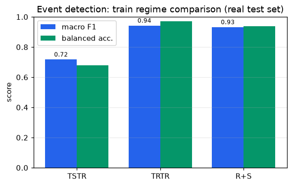
Confusion matrices (row-normalized) for the synthetic-only and real-trained detectors:
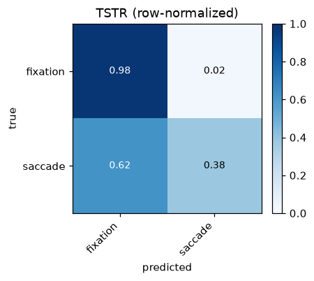
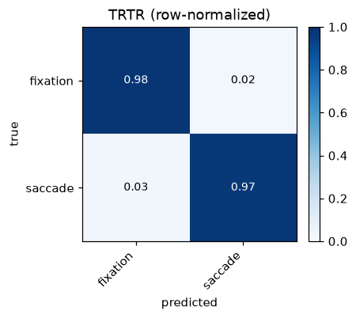
What the numbers say.
What this does and does not show. It shows that synthetic gaze with free labels is already useful for the label-expensive part of event detection, namely fixations, and it locates saccade kinematics as the realism gap to close. It is a general-domain (free-viewing) result, not reading-specific: no reading dataset with raw samples and hand labels was reachable in this environment, so a reading-domain version of this test needs such a dataset (for example GazeBase-TEX) or your own labelled recordings.
Reproduce:
uv run synthetic-eye-tracking detect-events --output data/reports/detection
The command downloads Lund2013 from GitHub on first run. The full experiment is heavy (millions of
synthetic samples trained across folds and regimes); reduce --n-domains for a quicker pass.
uv sync
uv run pytest # 65 passed, 1 skipped
# regenerate every figure and statistic in this report
uv run python scripts/make_report_figures.py
uv run --with markdown python scripts/build_html.py # writes docs/index.html
The run is seeded (seed = 42), so the figures and statistics regenerate identically.